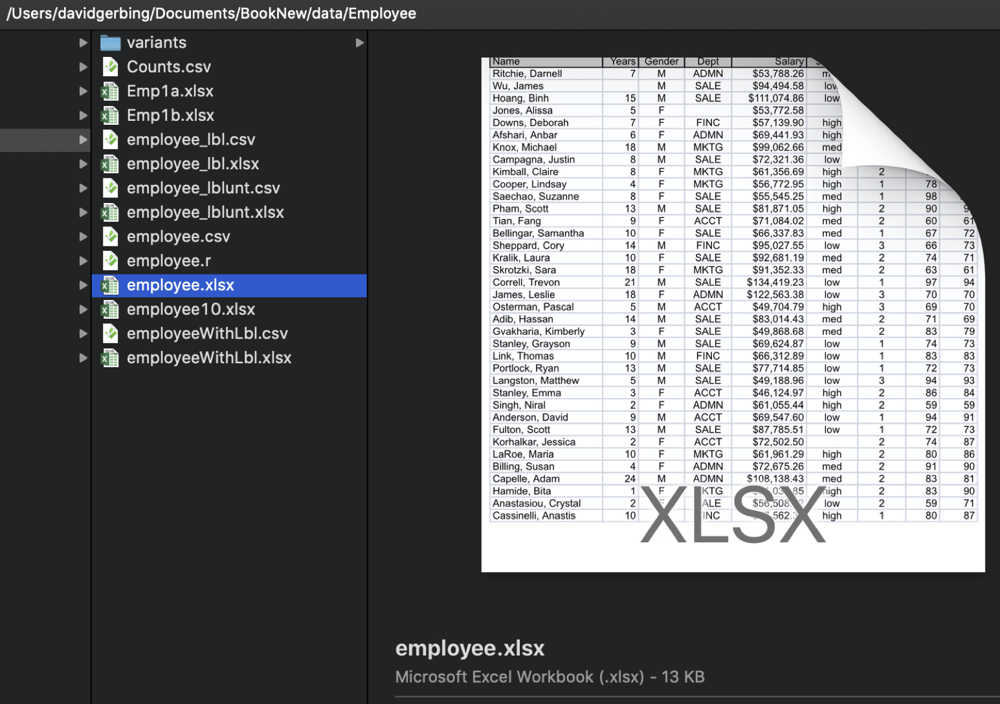
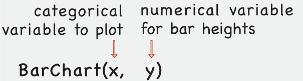

2 R Data Analysis
2.1 Data
2.1.1 Data Table
Data analysis begins with, well, data. Analyze the data values for at least one variable, such as the company’s employee annual salaries. Organize the data values into a specific kind of structure from which analysis proceeds. To use any data analysis system such as R, organize the data values into a table.
video: Data Table [4:05]
Data table: Organize data values into a rectangular data table with the data values for each variable in a column, and the name of the variable at the top of the column.
Store the structured data values within a computer file, on your computer, an accessible local network, or the world wide web. Encode the data table in one of a variety of computer file formats. The formats we encounter are Excel files, indicated by a file type of .xlsx, and text files in the form of comma-separated value files (csv). Identify a text file with one of several potential file types, such as .txt, but usually .csv.
The data table in Figure Figure 2.1, formatted as an Excel file, contains four variables: Years, Gender, Dept, and Salary plus an ID field called Name for a total of five columns. Figure Figure 2.1 displays data values in the Excel file for these variables for just the first six employees out of many more.

Describe the data table by its columns, rows, and cell entries.
Variable name. A short, concise word or abbreviation that identifies a column of data values in a data table.
Analysis of data can only proceed with the data table identified and the relevant variables in the data table identified by their names.
Analysis requires the correct spelling of each variable name, including the same pattern of capitalization.
Data value: The contents of a single cell of a data table, a specific measurement, except for the first row, which (usually) contains the variable names.
The name “variable” was chosen because the data values for a variable vary. Obvious but worth articulating because statistics is the analysis of that variability. The practice of statistics is the analysis of the data values of a single variable and analyses that relate the data values of different variables.
Variables define the columns of a data table. What about the rows?
Observation: A row of the data table that contains the data for a specific instance of a single person, organization, place, event, or whatever is the object of analysis.
Unfortunately, the reference for the rows of the data table is not standardized. Observations are also referred to as cases, examples, samples, instances, and observations.
Consider employee Darnell Ritchie. He has worked at the company for seven years, identifies as a man, and works in administration with an annual salary of $43,788.26. Two data values in this section of the data table are missing. The number of years James Wu has worked at the company is not recorded, nor is the department in which Alissa Jones works.
2.1.2 Read Data into R
To begin an analysis, read the data stored within a computer file into R. Your data organized as a data table exists somewhere as a data file stored on a computer system, on your computer or a network, including the web. The data table may be stored in one of many different formats, including Excel. Figure Figure 2.2 shows a data table as an Excel file named employee.xlsx stored on a (Macintosh) computer. Figure Figure 2.1 shows the first several lines of this data table in detail.

To analyze data within a data table stored in a computer file, first read the data table from the computer file into a corresponding data table within a running R session. R refers to a data table within R according to its name.
Data frame: A data table stored within an R session, referenced by its name.
Reference the data table stored on your computer system by its file name and location. Each variable in a data table has a name, and so does the data table itself. When read into R, name the data table, the R data frame, with a name of your choice. Regardless of the file name of your data on your computer system, typically name the data table within the active R session, the data frame, as simply d for data. Not only is d easy to type, but it is also the lessR default data frame name for the data processed by its various analysis functions.
When analyzing data read into R, the same data exists in two locations: a computer file on your computer system and an R data frame within a running R app. Different locations, different names: same data. On your computer system, identify the data table by its file name and location. A running R app identifies the same data from the data file by its data frame name, such as d.
Do a function call to read the data from a file into a data frame of a running R application. Analogous to multiple Excel worksheets in a single Excel file, a running R session can contain multiple data frames, though we usually work with only one, usually with the name of d for data. Multiple read functions are available from R as downloaded and from functions in different packages. We use the lessR function Read() for its simplicity and helpful output to better understand the data that R reads into a data frame.
2.1.2.1 Browse for the Data Table File
To read the data, direct R to the location of the data file. R cannot read the data file until it knows where the data is stored. One option locates the data file on your computer system by browsing for it. You navigate your file system until you locate the file.
If you are running R/RStudio in the cloud, your “local” computer is your cloud account, not the computer from which you are accessing the cloud. That “computer” could be any device, such as a tablet or an iPhone that does not even run R. So first upload your data file to your cloud account, as shown in the previously link reference cloud directions.
The following Read() statement reads the data stored as a rectangular data table from an external file stored on your computer system such as an Excel file. The Read() statement reads the data from the file into an R data frame called d. The empty quotes indicate to R to open your file browser to locate the data file that already exists somewhere on your computer system.
video: Read Data [3:35]
Example 2.1
d <- Read("")As with all R (and Excel and Python and everything else) functions, the call to invoke the function includes a matching set of parentheses. Information within the parentheses specifies the information provided to the function for analysis.
The <- in the Read() statement indicates to assign what is on the right of the expression, here the data read from an external file, to the object on the left, here the R data frame stored within the R session, named d in this example. You can also use an ordinary equals sign, =, to indicate the assignment, but the <- is more descriptive and more widely used by R practitioners.
2.1.2.2 Specify the Location of the Data Table File
One way to locate a data file to be read explicitly specifies the location of the file within the quotes and parentheses of the Read() function. Specify either the full path name of a file on your computer system, or specify a web address that locates the data table on the web. Again, read the data into the d data frame, remembering to include the quotes.
With Excel, R, or any other computer apps that process data, enclose character string values, such as a file name or web address (URL), in quotes. For example, to read the data from the web data file employee.xlsx into the data frame d, invoke the following Read() function call.
Example 2.2
d <- Read("http://web.pdx.edu/~gerbing/data/employee.xlsx")To specify a location of the data file on your computer, provide the full path name that locates and names your data file. To obtain this path name, first browse for the file with Read(""). The resulting output displays the path name of the identified file. Copy this path name and insert between the quotes of Read(""), save this and other R function calls in a text file. Run the code in the future to directly read the data file for future analyses without needing to browse for its location.
In summary, with the Read() function, either put nothing between the quotes to browse for a data file, or specify the data file’s location on your computer system or the web. Direct the data read from a file into an R data frame, usually named d, but can choose any valid name.
2.1.2.3 Output of Read()
R organizes analyses by variable name, so it is crucial to know the exact variable names. This specification includes the pattern of capitalization. The Read() function automatically displays these names. Rows and columns organize a data table. The variables are in the columns, so to specify a variable is to select a column of data values.
Read() also displays the type of each variable stored in the computer, as numbers with or without decimal digits, or as character strings. Also listed are the number of complete and missing values for each variable, the number of unique values for each variable, and sample data values. Figure Figure 2.3 lists the output from reading the employee.xlsx data file.

To ensure that your data was read correctly, always compare the output of Read() with the actual data file. Never blindly read data into R or any other system without first verifying that the data values in the data table stored on some computer system match the variables and data values as read into an R data frame.
To allow for many variables, Read() lists the information for each variable in a row. Note that the data file organizes the variables by column. Compare the output of Read() with the description of the data file in Figure Figure 2.1 and Figure Figure 2.2.
2.1.3 Display the Data
To analyze data, first understand the data. You should know what the data values look like for each variable, and you should know the variable names. The output of the lessR function Read() assists this understanding, but often you want to view the data directly.
After reading the data into R, you can view the contents of the newly created data frame. The rule is that to view the contents of any R object, of which there are many types, enter the name of the object at the console, in response to the command prompt >.
video: Display the Data [1:49]
Example 2.3
dOr, use the R head() function to list the variable names and, by default, the first six rows of data, here for the data frame d.
Example 2.4
head(d)A major advantage of R over Excel is the separation of data from the instructions to process that data. Still, you need to frequently view your data to understand what it is that you are analyzing.
When something does not work the way you expected it to work, look at your data! Often the problem can be fixed because the computer stored your data differently than the way you thought the data would be stored. Instead of guessing to fix a problem, first take a look at your data.
Name Years Gender Dept Salary JobSat Plan Pre Post
1 Ritchie, Darnell 7 M ADMN 53788.26 med 1 82 92
2 Wu, James NA M SALE 94494.58 low 1 62 74
3 Hoang, Binh 15 M SALE 111074.86 low 3 96 97
4 Jones, Alissa 5 W <NA> 53772.58 <NA> 1 65 62
5 Downs, Deborah 7 W FINC 57139.90 high 2 90 86
6 Afshari, Anbar 6 W ADMN 69441.93 high 2 100 100Compare this output, the representation of the data within R, to the data table in Figure Figure 2.1 as an Excel file. Same data, different locations. Note the representation of missing data.
R missing data code:
NAand<NA>for not available indicates missing data for numerical and non-numerical variables, respectively.
The blank cells in the Excel file, Figure Figure 2.1, are replaced with either NA for the numerical variable Years, and <NA> for the variable Dept with non-numerical values.
R also provides a corresponding function tail() that lists the data values at the end of the file.
2.1.4 Two Types of Variables
Always distinguish continuous variables from categorical variables. This distinction between these two types of variables is fundamental in data analysis.
Continuous (quantitative) variable: A numerical variable with many possible values.
Categorical (qualitative) variable: A variable with relatively few unique labels as data values.
Examples of continuous variables are Salary or Time, all defined on a numerical scale with many unique values. Examples of categorical variables are Gender or State of Residence. Each categorical variable has just a relatively few number of possible values compared to a continuous value. This distinction of continuous and categorical variables is common to virtually every data analysis project.
Sometimes that distinction gets a little confusing because variables with integer values, which are numeric, could be quantitative or qualitative. For example, sometimes Man, Woman, and Other are encoded as 0, 1, and 2, respectively, for three levels of the categorical variable Gender. However, these integer values are just labels for different non-numeric categories. Best to avoid this confusion. Instead, encode categorical variables with non-numeric values, such as Gender, for example, with M, W, and O for Other.
To distinguish between continuous and categorical variables, determine if the values of a variable are on a numerical scale, presumably with a relatively large number of unique values that can be ordered from smallest to largest value. A categorical variable such as Gender, however, coded numerically, does not imply the values are on a numerical scale. For example, Woman coded a 1, is not more than Man, coded as 0, or vice versa.
2.2 Visualize the Data
The most fundamental analysis of data is counting the occurrence of each data value, or group of similar data values.
General Principle: Read the data table into an R data frame (table) with the
Read()function, then analyze specific variables in that data table, each referenced by its name.
All data analysis in R follows from the names of the relevant variables as stored within the relevant data table. In the function call for a data analysis, include the variable name, such as Salary, a continuous variable, or Gender, a categorical variable. The lessR Read() function lists the variable names as part of its output. Each analysis is of one or more variables, not the entire data table. Distinguish between the name of the data table, and the name of the variable(s) that exist within the data table.
Effectively communicate the results with data visualizations. The type of visualization for counting data values, as with most analyses, depends on the type of variable, categorical or continuous.
2.2.1 Bar Chart and Pie Chart
One of the most encountered data visualizations is the bar chart. Create a bar chart or pie chart from the categories (levels) of a categorical variable with a number associated with each category. First, the bar chart.
Bar Chart: Plot a bar for each level of a categorical variable with its height scaled according to the value of the associated numerical variable.
A bar chart requires two variables to plot, the categorical variable of interest and the associated numerical variable. The number associated with each level (category) could be any number. A bar chart is constructed from the values of the two variables expressed as a table with two columns. One column contains the name of each category of the categorical variable. In the second column of this simple table is the number associated with each category. The height of each bar is proportional to the number associated with the corresponding level.
What is the source of the numbers in the table, a numerical variable, from which the bar chart is constructed? There are three possibilities.
- Provide the table directly to the bar chart function. The numbers could be anything. A common application is reading this table from some publication and then creating the bar chart without access to the original data. For example, from a table of the amount of wine grapes produced in tons for different varietals during a given year in Oregon, visualize the production number for each varietal with a bar chart.
- The computer constructs a summary table from the original data, a pivot table in Excel language. A common application is the count of how many times each category appeared in the data. For example, from the class grade book, how many students in the class received an A for their course grade? An A-? … and so on.
- The computer constructs the summary table as a statistic computed for an additional variable, a continuous variable, separately for each level of the categorical variable. One example is average salary computed for each department in a company, and then plotted as a bar chart.
Frequency distribution: A pivot table constructed by counting the number of times each value occurred in the data for a variable.
The lessR bar chart function, BarChart(), provides both the bar chart and the summary table from which the bar chart is constructed.
2.2.1.1 Bar Chart from Measurements
One possibility creates the bar chart from the data table of measurements. Data analysis ultimately begins with the measured data values. To plot a bar chart, first read the data table of measurements from a computer file into the R data frame named d.
Raw data: The original, measured data values before any summarization or transformation.
An example of raw data is the data table of employees with variables such as Salary and Gender in Figure Figure 2.1. The data values for each employee are the original data values from which the analysis begins, recorded as measurements. To begin the analysis, read these data values into an R data frame, usually named \(d\).
2.2.1.1.1 From the R Console
Consider a data frame of the raw data that contains a categorical variable, here referred to with the generic name \(x\). For a specific analysis, \(x\) takes on a specific name, such as Gender or Dept.
Here, enter the function call to create a bar chart directly into the R console. The following instruction creates the bar chart of the counts of occurrence of each category for a categorical variable named \(x\), and the table of counts (frequencies).

A call to a function to create a bar chart necessarily contains the name of the variable with values that are the categories to plot. For example, for categorical variable Gender, values of Woman, Man, and Other.
With the BarChart() function, the name of the categorical variable is the first value passed to the function, and often, as in this example, the only value passed to the function. If the data frame is named d, then do not need the data parameter. If a bar chart is constructed from two variables, and only the categorical variable is supplied to the function, what is the unspecified numerical variable?
To illustrate, return to the data in Figure Figure 2.1. First, read the data into R as the d data frame. Given the data, BarChart() tabulates and displays the number of employees in each department, according to the variable named Dept. The values of Dept are in the default data frame (table) named d.
The result is the bar chart in Figure Figure 2.4 for the distribution of the values of the categorical variable Dept. The only information passed to BarChart() in this example is the name of the categorical variable to analyze. In this situation, by default, BarChart() identifies the count of occurrence of each category in the data as the corresponding numerical variable to plot.
video: Bar Chart of Counts [3:08]
Example 2.5
BarChart(Dept)
Obtain the same analysis by including the data parameter to explicitly identify the name of the data frame, here the default value d.
BarChart(Dept, data=d)Again, if the data frame that contains the variable of interest is named d, then no need to include the data parameter. If the data frame name is something other than d, then include the parameter to identify the data table that contains the variable of interest. When doing R analyses you can have as many data tables as your computer memory will allow.
The BarChart() function provides a default color theme, which also labels each bar with the associated percentage of values for the corresponding category.
2.2.1.1.2 Interactive Analysis
Another way to construct the corresponding bar chart uses the lessR interactive analysis, called by entering interact("BarChart") into the R console. Then you can create a bar chart and explore different forms of the bar chart simply by clicking with your mouse.
video: Create a bar chart interactively [before 4:04 does interactive bar charts on your computer, after 4:04 does bar charts with a cloud account.]
If you do interactive plots in a cloud account and if you save the interactive plot (instead of taking a screen shot), RStudio will save the plot in your cloud home directory (folder). Navigate to this directory by clicking on the Cloud icon in the Files tab in the bottom-right window pane, then click in the corresponding folder that contains the pdf file, as shown in the second half of the video linked above.
2.2.1.1.3 Statistical Output
The BarChart() function provides the tabular form of the frequency distribution, an example of a pivot table, as part of its text output to the R console, as shown in the above output. The counts appear in the row labeled Frequencies, with the categories in the previous row.
From the frequency distribution that pairs a number with each category or level of the variable of interest, BarChart() visualizes that pairing with the bar chart. In this example, the frequency distribution reveals that there are five accountants (ACCT), six administrators (ADMN), four financial analysts (FINC), six marketers (MKTG), and 15 people working in sales (SALE). From this information, a bar chart function defines the bars and their associated heights.
2.2.1.2 Bar Chart from Summary Table
A bar chart visualizes the number associated with each category. In the previous example, the data entered into the analysis consisted of the raw data, the original measurements. The BarChart() function then automatically proceeded to tabulate how many times each level of the categorical variable occurred in the data. From this tabulation it constructed the summary table of two columns that paired each level of the categorical variable with its corresponding frequency of occurrence, and from this table the bars on the bar chart were drawn.
In general, construct a bar chart from any table that lists the pairing of each category with some number that translates into the height of the bar for that category. The summary table need not be a frequency distribution, a count of how many times each value occurred. Indeed, the table of categories and corresponding numbers could be completely nonsensical. To apply in the real world, of course, the table usually provides meaningful information, even if not counts. One example is the height of the starting center for each NBA team. The table would be a list of all NBA teams, each team paired with a number such as 83, for 83 inches tall.
Continuing the previous example of employment in various company departments, suppose the summary table of the counts is already available, but not the raw data, the original data table of measurements. Maybe you found a company report that listed the count of employees in each department, and from that table, wish to create the corresponding bar chart.
In this instance, read the summary table into R as the data to analyze, the values that BarChart() implicitly computed in the previous example. Or, easily compute the summary table, the category and counts, in Excel directly, as a pivot table, or even more simply with the lessR function pivot(). Or, if available from another source, enter the summary table directly into Excel. In this example, simply locate the already constructed summary table on the web.
d <- Read("http://web.pdx.edu/~gerbing/data/DeptCount.xlsx")After reading the data into the R data frame d, display the contents of the resulting small data frame (table).
d Dept Freq
1 ACCT 5
2 ADMN 6
3 FINC 4
4 MKTG 6
5 SALE 15This summary (pivot) data table contains the two variables relevant to the analysis, categorical variable Dept, and numerical variable Freq. The summary table contains only one row for each value (category) of Dept. The values of the numerical variable specify the scaled height of the bar for the corresponding category.
To create the bar chart from the summary table, specify the categorical variable as before, and then specify the numerical variable that maps to each bar’s height. For a categorical variable named \(x\), and a numerical variable named \(y\), following is the general form of the call to BarChart() that reads data from a summary table.

For this example, the categorical \(x\) variable is named Dept, and the numerical \(y\) variable is named Freq. Both variables are in the d data frame, so no need to specify data=d in the call to BarChart() because the name d is assumed unless otherwise specified.
When the data are a summary table, BarChart() reads the values of the \(y\) variable, here Freq, directly instead of computing its values.
Example 2.6
BarChart(Dept, Freq)This R instruction, a function call, creates the identical bar chart shown in Figure Figure 2.4. Here, instead of constructing the bar chart from the original measurements and let BarChart() implicitly calculate the summary table of departments and counts, BarChart() directly accesses the already computed summary table. Include the numerical variable as the second parameter value in the call to BarChart(), which indicates to read data from a two column summary (pivot) table.
2.2.1.3 More Bar Charts and Beyond
There is more to know. If you would like to learn more about bar charts (including some material we cover later in this course), I wrote a fun article for medium.com (Gerbing 2019). The link provides free access.
For a more comprehensive understanding of data visualization, see my May 2020 book on the topic (Gerbing 2020).
2.2.1.4 Pie Chart from Measurements
An alternative to the bar chart is the pie chart. Data visualized as a bar chart for a single variable can also be represented with a pie chart.
Pie Chart: Relate each level of a categorical variable to the area of a circle (pie) scaled according to the value of an associated numerical variable.
As with the bar chart, obtain the pie chart of the frequencies of a categorical variable, generically named \(x\). Of course, replace the generic name with the actual variable name for any one analysis. After reading the data, create the ring chart version of the pie chart.
knitr::include_graphics(rep("images/pcExplain.png"))
For a single variable, the pie chart presents an alternative visualization of the data provided by the bar chart. As with the bar chart, in lessR you can create the pie chart interactively by entering interact("PieChart") into the R console. Figure Figure 2.7 displays the pie chart in the form of a doughnut or ring chart.
video: Pie Chart of Counts [1:26]
Example 2.7
PieChart(Dept)
The doughnut or ring chart is a reasonable alternative to the standard bar chart. The lessR function PieChart() also can create the “old-fashioned” pie chart. We have seen the summary statistics several times now, so turn off the output to the R console here with the quiet parameter. Set the hole size in the doughnut or ring chart with the parameter hole, which specifies the proportion of the pie occupied by the hole.
Example 2.8
PieChart(Dept, hole=0, quiet=TRUE)
The default hole size is 0.65. Set that value to 0 to close the hole.
2.2.2 Histogram
For a continuous variable, can plot the counts with a histogram. Unlike a categorical variable, a continuous variable presents many different, numeric values. The underlying continuity requires a different approach than for the bar chart, the binning of the data. The resulting visualization of how the values of a continuous variable are distributed is a histogram.
Bins: A sequence of adjacent, non-overlapping intervals, each generally of the same size.
Histogram: Group similar data values from a continuous variable together into a bin, then assign a single count to each bin.
One possibility creates the histogram and associated statistics from a continuous variable using lessR by entering interact("Histogram") into the R console. Or, directly call the lessR function Histogram(). In this example, create the histogram for the generic variable \(x\).

As an example, consider the variable Salary in the d data frame, read from the data table illustrated in Figure Figure 2.1. Find the histogram in Figure Figure 2.10.
video: Histogram [2:39]
Example 2.9
Histogram(Salary)
We get not only the histogram, but the corresponding frequency distribution from which the histogram is constructed, as well as summary statistics and an outlier analysis. The frequency distribution shows the sequence of bins and how many values are located within each bin.
Choosing the best size for the bins is not a task that a computer algorithm can solve. Usually better to experiment with different bin sizes. For an undersmoothed histogram, bin width is too small. For an oversmoothed histogram, bin width is too large.
To control the width of the bins, use the bin_width parameter as part of the call to the Histogram() function. To adjust bin width interactively, enter interact("Histogram") and click on the Bins section. Here explicitly set the bin width to 13,000 USD for the histogram of Salary instead of relying upon the default bin width provided by R. The resulting histogram in Figure Figure 2.11 is smoother than the original in Figure Figure 2.10. Also, in this example, turn off the console output with the quiet parameter.
Example 2.10
Histogram(Salary, bin_width=13000, quiet=TRUE)
There are many different parameters for most functions, discussed in the next section.
2.2.3 Parameter Values
A variety of conditions control the output of each analysis, text or visualization. A bar chart or a histogram, for example, requires colors for the bars, colors for the bar edges, labels for the axes, and many other characteristics. In terms of text output, for example, the maximum width of each line must be pre-set before analysis begins.
Characteristics such as bar color and maximum line width are not hard-coded into the function but instead can be customized. This logic applies to any analysis system, such as Excel or R.
Parameter: A user-controlled value of a function’s code, a placeholder, that specifies some characteristic of the way the data is processed or the output of the function is displayed.
Each function includes parameters to customize input or output. For any bar chart or histogram function from any analysis system, such as Excel or R, one parameter sets the color of the bars, and another parameter sets the color of the bar edges.
To use a function and have to manually select all the parameter values manually would be much too tedious.
Default parameter value: A preset value of a parameter, unless explicitly changed when invoking the function.
Each function consists of several or even many different parameter values set at default values. For example, the BarChart() and Histogram() parameter fill sets the color that fills the bars. By default, BarChart() displays each bar in a different color, but the bars can also be set at the same color. To change the color of all the bars to a blue shade, in Figure 2.12 set the fill parameter to "steelblue", one of many R defined colors.1 Again, set the parameter quiet to TRUE to suppress the statistical output.
Example 2.11
BarChart(Dept, fill="steelblue", quiet=TRUE)
Explore these parameter values and their effect on the resulting visualization interactively with the lessR function interact(). To use, provide the name of the visualization contained in quotes, such as interact("BarChart") or interact("Histogram").
video: Examine the code created for BarChart() from the interactive session. [3:26]
Parameter values can be numeric or a character string such as a word or a letter. As is true of all computer analysis systems such as Excel and R, if a parameter value is a character string, enclose its value in quotes. For example, "steelblue". Specify numbers without quotes, such as 1300 in the previous example of setting the bin width of a histogram.
Also, as is true of Excel and other analysis systems such as R, the general format for setting a parameter value within the call to a function follows in Figure Figure 2.13. The three dots, ..., in the figure indicate other stuff that is part of the function call, such as a variable name.

In the BarChart() example above, fill names the parameter. The value of "steelblue" is the specific value set for that parameter. Explicitly setting that parameter value overrides the default value of BarChart(), which provides a different color for each bar.
Parameters control many aspects of the way that a function processes data, far more aspects than just color. You can rely upon the default parameter values, or add more paired parameter names and values as there are parameters to add. Customize the resulting bar chart, or rely upon the default values that lessR provides without customizing anything. Every R function has a help file that reveals the parameters associated with that function. To see all the possibilities of applying the function, display the help file for the function. To view its contents, enter a question mark, ?, followed by the function name.
As another example, there is a data parameter for lessR analysis functions such as BarChart() that specifies the name of the data table that contains the variable(s) to analyze. These functions default to the data table name d, so no need to specify the parameter if referring to the default name.
?BarChartToward the beginning of the help file, find a list of all the parameters, their default values, and an explanation of each.
2.3 Summary
To use R to do a data analysis requires at least three separate R functions. Run R either on your computer or in the cloud.
- Retrieve the
lessRfunctions from your R librarylibrary("lessR") - Read the data from a file into R:
d <- Read("")to browse for the file,
or,
d <- Read("path name" or "web address")to specify the location of the file - Analyze the data values for a specific variable, generically named x. Begin with the
lessRfunction calls that count the data values that have occurred for variable x:Histogram(x)for a continuous variable, orBarChart(x)orPieChart(x)for a categorical variable.
The above steps can also be done interactively using the lessR function interact().
Beyond lessR, find many, many analysis functions in base R as originally downloaded. Find even more functions in contributed packages such as lessR.
View all R color names and colors with the
lessRfunctionshowColors().↩︎